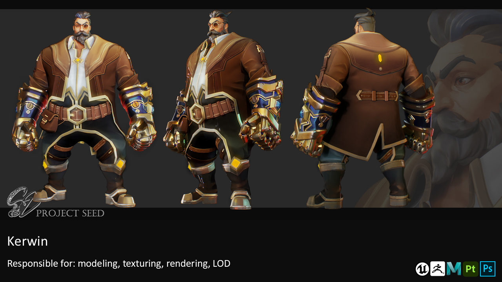
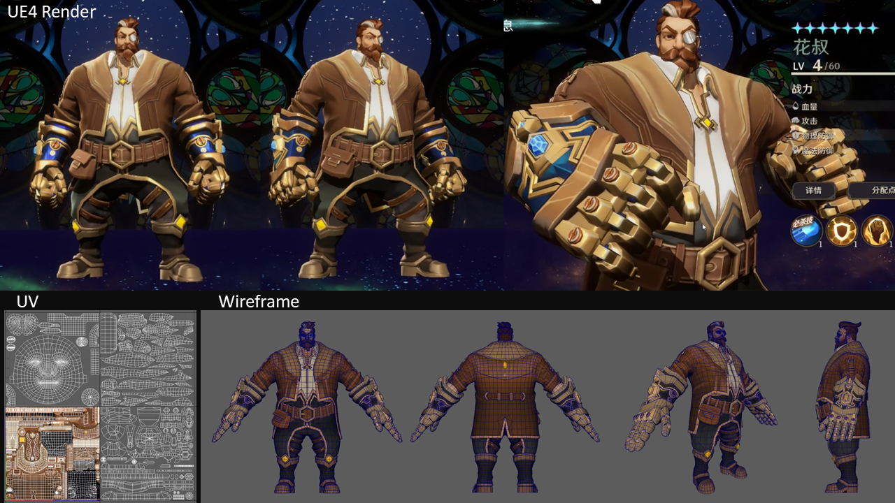
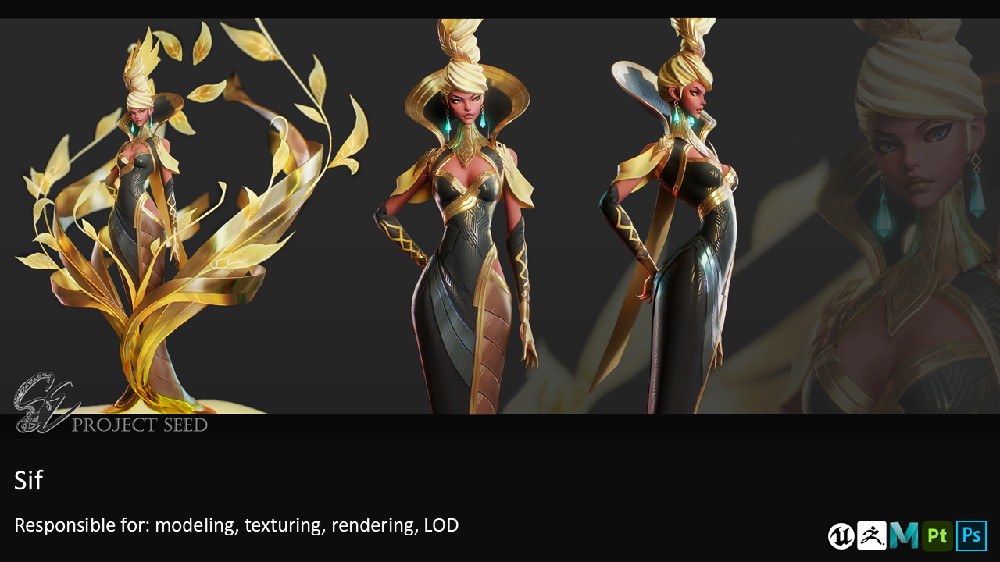
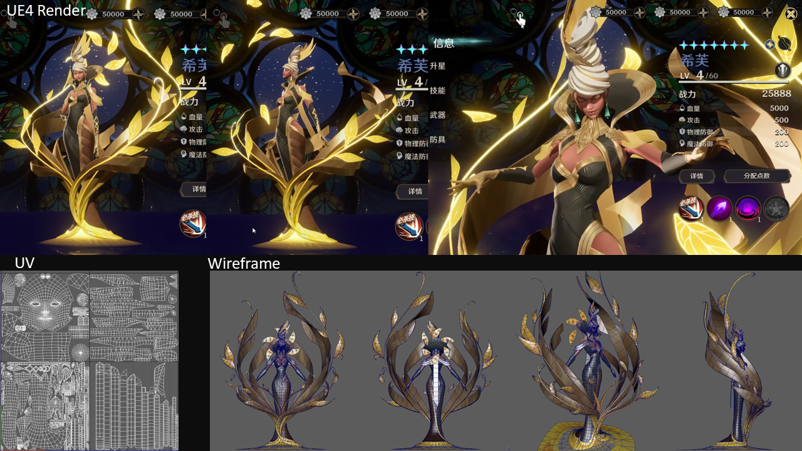
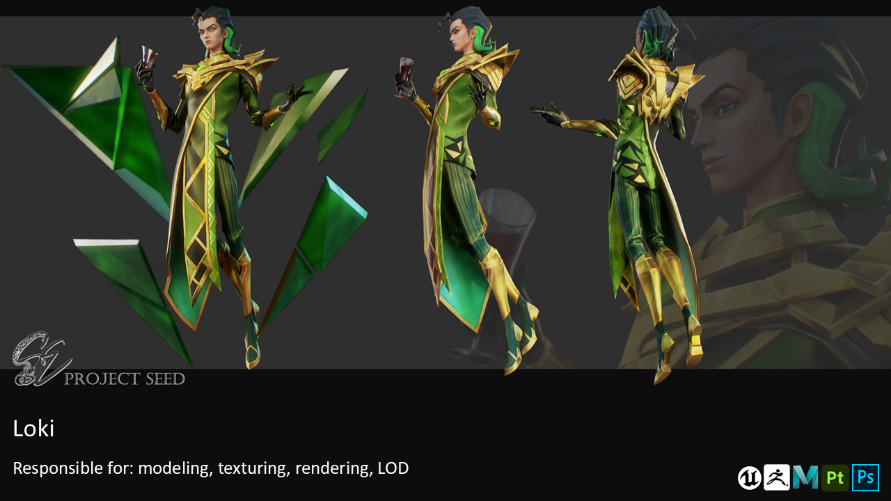
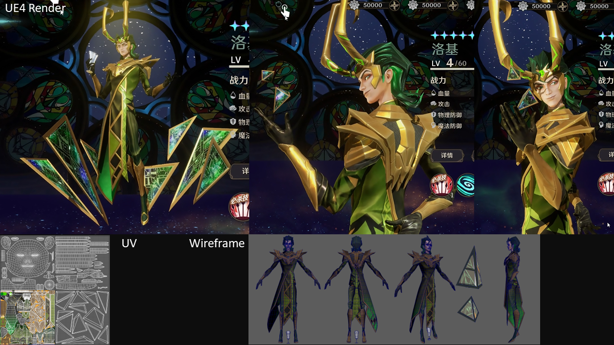
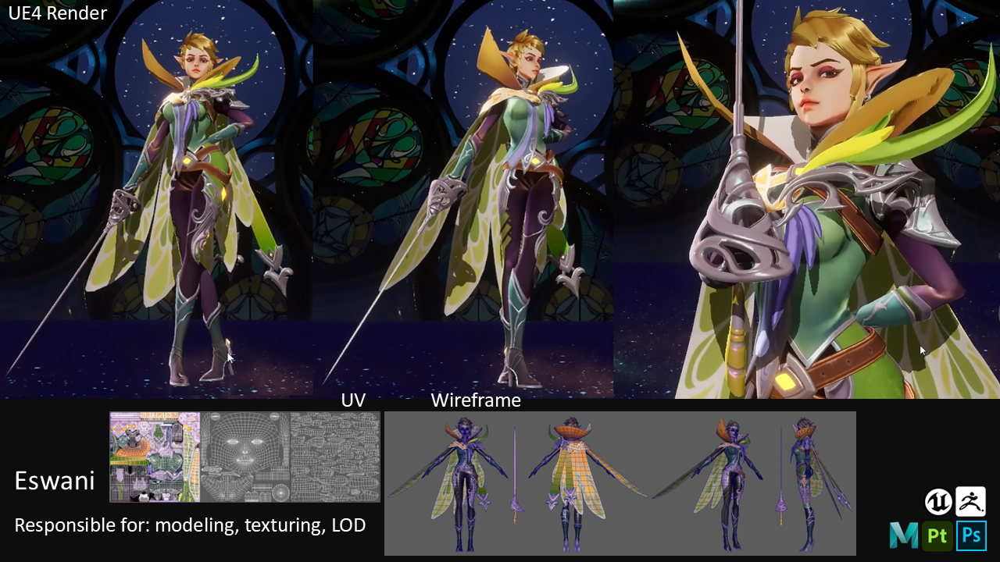
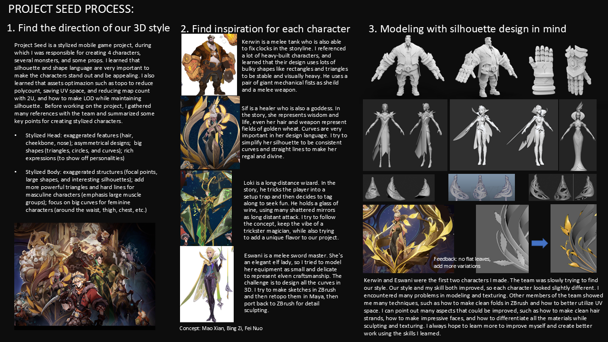
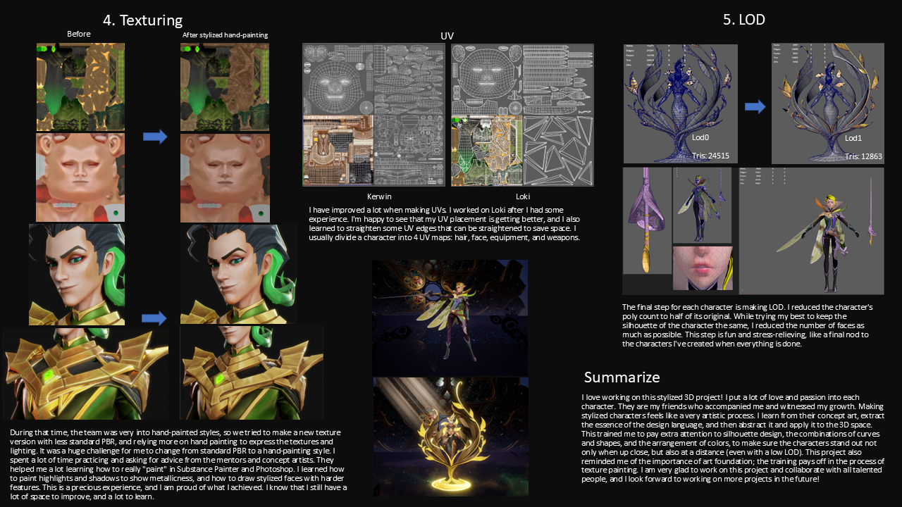

Stylized Character
Project Seed
Project Seed is a collection of stylized game characters created for a commercial mobile game project. The work focused on clean silhouettes, hand-painted materials, and production-ready assets suitable for real-time animation. Each character was developed to maintain a consistent visual style while supporting efficient game production.
Responsibilities included character modeling, UV layout, texturing, rendering, and LOD optimization for game integration.

Project Breakdown
Process & Presentation








